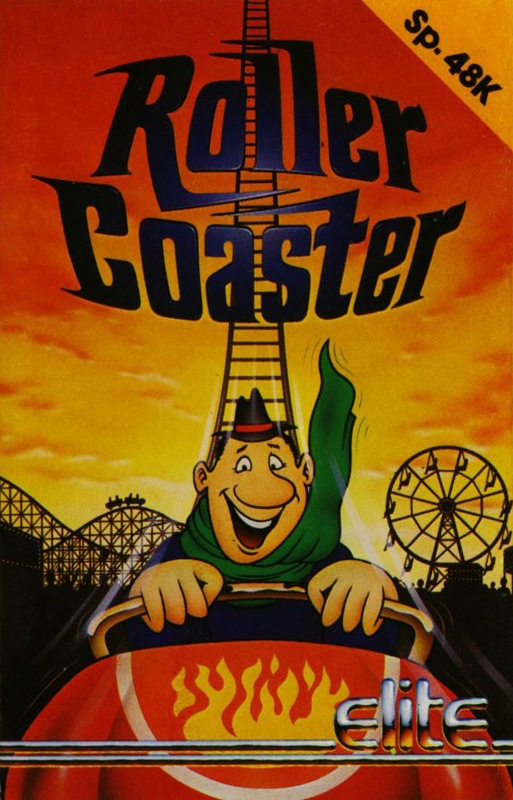
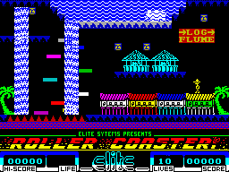

Roller Coaster


{kind=link}

| Publisher: | Elite |
| Price: | £6.95 |
| Year: | 1986 |
| Source: | CRASH, Issue 66 |

Roller Coaster from Elite, is a fun fair simulation. Playing a punter, the idea is to collect all the cash left around the place during the day by the milling masses. The money is placed in the most awkward and precarious of perches and to get at it, various bits of active fairground machinery has to be negotiated. The background is that of typical American theme park with sideshows, palm trees, buildings and candy stores. These are located along the bottom of the playing screen while the amusements, usually, are a bit more skyrise.
Apart from a giant log flume, mini bumper cars and ferris wheel type rides, you’ll also come across numerous waltzers scattered around the park. Made up of a number of separate cars that aren’t connected in any way, they spin around the screen in weird sinusoidal patterns and yet retain their shape as a waltzer. Another attraction is the funhouse, a building full of platforms which cycle round, contorting and twisting while bouncing your little man along different paths.

Your character can travel and ride on any of the attractions he may find, by just jumping on. There’s no need to pay! Since he’s an athletic little chap, he’s able to walk, run and jump, and can hitch a ride by hopping on at the right moment. Though looking big and butch with his ten gallon hat, our little hero is not invulnerable. Doing silly things like leaping off unreasonably high buildings or jumping into water takes away one of the ten lives supplied. If he is in imminent mortal peril, a little bit of zip can be added to his step by holding down M as well as a direction key. This near doubles the little sprite’s pace and can be handy when attempting leaps over large gaps.
The money around the fair is represented by small blue objects that look nothing at all like money, really. Jumping through a square piece of money lets loose a satisfying squeak, and boosts the figure in the little box at the bottom of the screen which displays the money collected so far.
There are three major rides around the sixty screen fair, all of them sort of rollercoasters. The first is on the screen to the right the start location, and is an olde worlde log flume. One of the others is a gold mine and a cave trip completes the trio. Any attempt to run up and down the track of one of the big rides is deadly, so it’s best to wait for the roller coaster carriage to come along, and leap into it. As you zoom along in the car, you pass under money hanging tantalisingly in the sky. Careful timing is needed if you’re to jump up, collect the loot and land safely back in the car.
As you travel throughout the fair the different screens flick into view as the central spritette moves off the edge of the current screen — as in so many other arcade adventures. Collect all the money and you’ve completed the game, but there’s no need to be so avaricious — you could just scamper around and explore, having fun on the rides.
CRITICISM
‘I thought I’d seen all there was and could ever be in the form of platform games after Dynamite Dan but I’ve been proved wrong again. Graphically, Roller Coaster is very good: your man and the various rides are very well drawn and animated, and the backgrounds are very colourful — which leads to a bit of attribute clash, but nothing too glaring. Controlling your bloke is very easy; I liked the idea of the ‘run’ key, as this helps you get out of trouble. Generally I enjoyed playing this game as it is different from the usual type of platform game.’
‘Roller Coaster was not written by the usual Elite team, and it shows. Not taking Elite’s usual ‘Every Game a Mega Game’ attitude, the author has turned out an enjoyable and very impressive product. Though fundamentally just an arcade adventure platform game there are so many clever extras added it makes the whole thing seem almost original. Looking at static shots in this review, Roller Coaster may not look all that impressive, but when you see the different objects move it takes on a whole new dimension. I really like Roller Coaster and it’s one of the most deserving titles yet to appear from Elite. It’s what a game should be, just totally unpretentious and fun to play.’
‘This game is brill! No longer do we poor country bumpkins have to wait till May for the fair: Roller Coaster brings all the fun of it into your living room! Wonderful graphics, terrific use of colour, and amazing addictive qualities — it’s just a great game. Big wheels, cafes, bumper cars and log flumes are all found in abundance on the many screens of this, the best from Elite for a long time. It owes a little in places to the legendary Manic Miner, in that here and there the old lateral thinking skills come in handy. All it needs now is an automatic, free candyfloss vendor!’
COMMENTS
| Control keys: | O left, P right, M run faster, CAPS SHIFT to jump |
| Joystick: | N/A |
| Keyboard play: | Responsive |
| Use of colour: | Neatly done, but a few attribute problems |
| Graphics: | Some very cunning animation on the rides, neat |
| Sound: | Jolly tune to start with, and good effects |
| Skill levels: | One |
| Screens: | 60 |
| General rating: | A different kind of platform game altogether. A great little game |
| Use of computer: | 87% |
| Graphics: | 88% |
| Playability: | 92% |
| Getting started: | 93% |
| Addictive qualities: | 93% |
| Value for money: | 90% |
| Overall: | 94% |